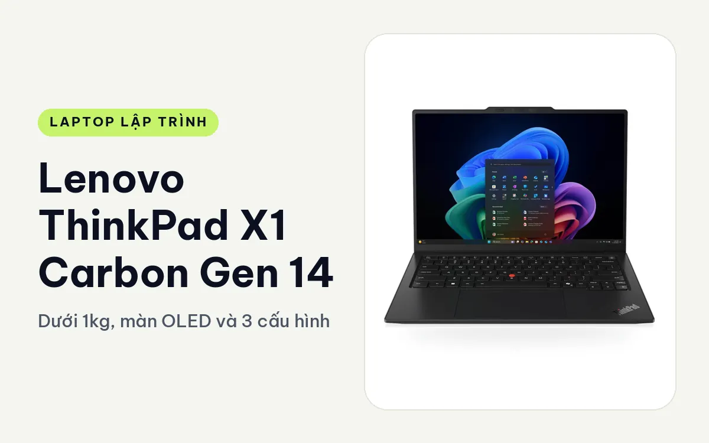
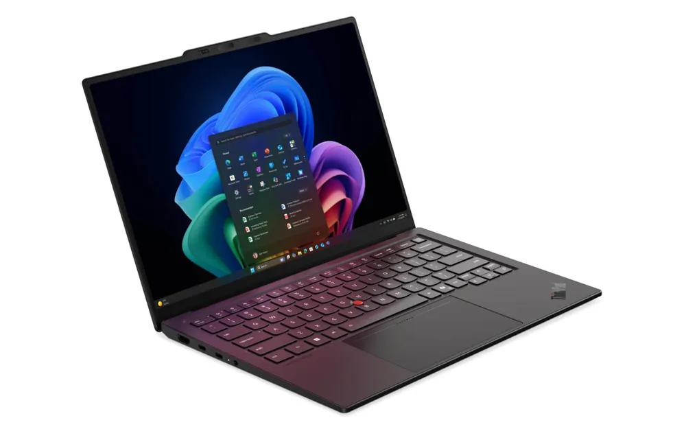
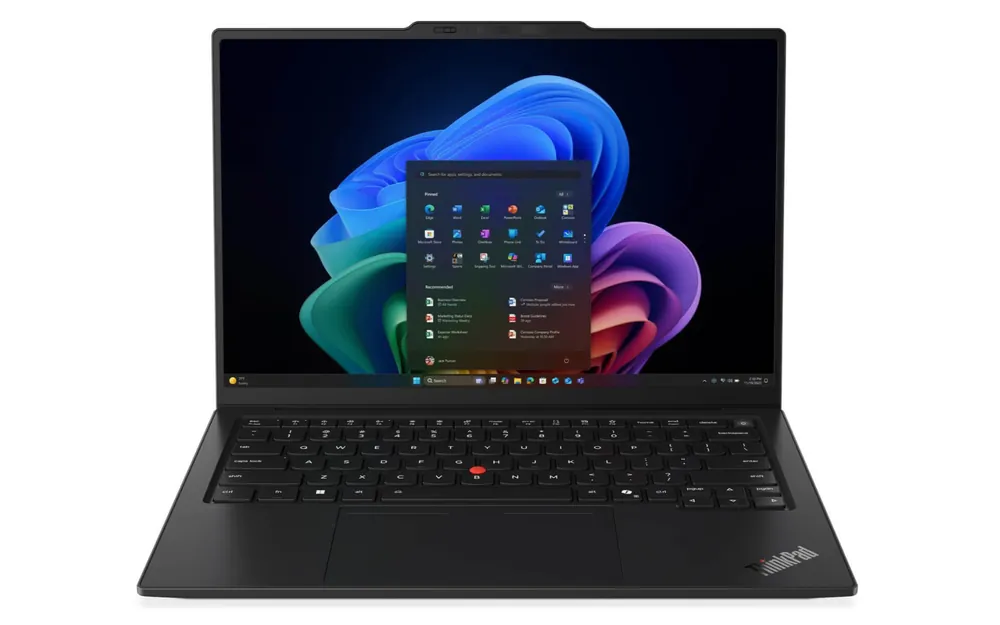
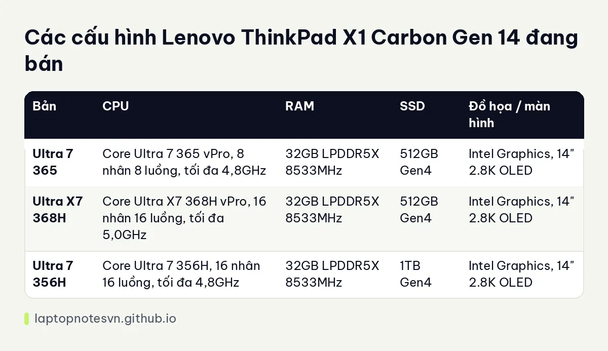

Lenovo ThinkPad X1 Carbon Gen 14 cho lập trình - Dưới 1kg, màn OLED và 3 cấu hình

Lenovo ThinkPad X1 Carbon Gen 14 Aura Edition là chiếc ultrabook cao cấp của hãng, bán cho người mang laptop đi suốt ngày. Trọng lượng khởi điểm dưới 1 kg là lý do chính để cân nhắc, còn phần cấu hình thì tách ra thành ba bản với hai loại chip khác nhau.
Bài này đi từ góc nhìn người code thường xuyên di chuyển: ngồi quán cà phê, chạy sang văn phòng khách, lên máy bay. Câu hỏi chính là bản nào đủ sức cho việc build, và bản nào chỉ cần cho việc viết code.
Thiết kế
X1 Carbon giữ hướng mỏng, gọn, tối giản và cứng cáp. Hãng không làm mỏng kiểu để đẹp rồi để lại cảm giác dễ vênh, nên cầm lên khá chắc tay. Kích thước chính xác và độ dày không có trong dữ liệu mà Hưng Phát có, nên bài này không nêu số.

Bàn phím vẫn có núm TrackPoint đỏ. Hãng cho phép mở nhanh menu tùy chỉnh bằng núm này, tiện khi anh chị cần tắt mic hoặc đổi thiết lập khi họp online giữa lúc đang gõ code.
Màn hình là điểm nổi bật. Cả ba cấu hình đang bán dùng OLED 14 inch độ phân giải 2880 x 1800, tần số quét thay đổi 30 đến 120Hz, phủ 100% DCI-P3, chống chói và chống bám vân, không cảm ứng. Độ sáng 400 nits, HDR True Black 500. Chữ trên màn OLED sắc nét, đọc code nhiều giờ khá dễ chịu, và nền tối của editor cho độ tương phản rất sâu.
Máy có ba cổng Thunderbolt 4 và Wi-Fi 7, sạc bằng củ GaN nhỏ. Ba cổng cùng loại giúp cắm sạc, màn hình ngoài và ổ cứng mà không cần hub, dù vậy anh chị nên chuẩn bị thêm một bộ chuyển nếu hay dùng HDMI hoặc cáp mạng.
Mang đi hằng ngày
Dưới 1 kg nghĩa là bỏ vào túi đeo chéo vẫn nhẹ vai, và cầm một tay khi đứng họp cũng không mỏi. Với người đi công tác liên tục, đây là cải thiện mà dùng vài ngày là thấy ngay.

Dung lượng pin và thời lượng chính xác không có trong dữ liệu, nên bài không hứa số giờ. Màn OLED 120Hz sáng cao sẽ ăn pin hơn mức trung bình, hãy hạ tần số quét khi làm việc trên pin.
RAM LPDDR5X 8533MT/s được hàn trên bo mạch. Điều này nghĩa là nâng cấp sau không có đường lùi, nên cấu hình cần đủ dùng ngay từ ngày đầu. Cả ba bản đều có 32GB, đủ cho phần lớn công việc code hằng ngày.
Có mấy cấu hình
Có 3 cấu hình, cùng RAM 32GB, màn OLED 2.8K, đồ họa tích hợp Intel. Khác ở chip và dung lượng SSD.

| Bản | CPU | RAM | SSD | Đồ họa / màn hình |
|---|---|---|---|---|
| Ultra 7 365 | Core Ultra 7 365 vPro, 8 nhân 8 luồng, tối đa 4,8GHz | 32GB LPDDR5X 8533MHz | 512GB Gen4 | Intel Graphics, 14" 2.8K OLED |
| Ultra X7 368H | Core Ultra X7 368H vPro, 16 nhân 16 luồng, tối đa 5,0GHz | 32GB LPDDR5X 8533MHz | 512GB Gen4 | Intel Graphics, 14" 2.8K OLED |
| Ultra 7 356H | Core Ultra 7 356H, 16 nhân 16 luồng, tối đa 4,8GHz | 32GB LPDDR5X 8533MHz | 1TB Gen4 | Intel Graphics, 14" 2.8K OLED |
Bản Core Ultra 7 365 vPro
Chip 8 nhân là bản nhẹ ký nhất trong nhóm. Nó hợp với người viết code là chính: web frontend, script Python, ghi chú kỹ thuật, chạy một hai container nhỏ. Máy sẽ êm và nhẹ, pin dễ kéo dài hơn khi không phải đẩy chip nhiều nhân.
Nếu anh chị hay biên dịch dự án lớn, hãy nhìn sang hai bản còn lại, vì chênh lệch số nhân sẽ thấy rõ khi build dài.
Bản Core Ultra X7 368H vPro
Đây là bản có xung cao nhất, 5,0GHz, và 16 nhân. Bản này hợp với backend nhiều service, build Gradle hoặc Android Studio, chạy máy ảo nhẹ mà vẫn muốn mang máy dưới 1 kg. Thêm vPro nên các công ty có đội IT quản trị từ xa sẽ thấy tiện.
Đồ họa vẫn là Intel tích hợp, vì vậy việc huấn luyện mô hình nên đẩy sang server hoặc cloud.
Bản Core Ultra 7 356H, SSD 1TB
Cùng 16 nhân như bản X7 nhưng xung thấp hơn một chút, đổi lại ổ 1TB. Nếu anh chị giữ nhiều repo, nhiều image Docker, dataset mẫu và máy ảo, ổ 1TB giúp khỏi phải dọn dẹp liên tục. Máy không có khe RAM nên dung lượng ổ lại càng đáng cân nhắc.
Bản này không ghi vPro trong cấu hình, điều chỉnh nếu công ty anh chị yêu cầu quản trị từ xa.
Nên chọn bản nào
Người viết code web và hay đi lại thì bản Ultra 7 365 là đủ. Ai cần build nặng hoặc chạy nhiều service cùng lúc nên lấy bản 16 nhân. Và nếu chọn giữa hai bản 16 nhân, hãy xem mình cần xung cao hơn hay ổ 1TB hơn.
Anh chị muốn một máy nhẹ nhưng có cổng LAN và RAM thay được thì xem ThinkPad T14 Gen 7 cho lập trình. Còn việc 32GB đã đủ hay chưa, bài lập trình viên cần bao nhiêu RAM có phần tính theo từng kiểu công việc.
Đăng ngày 08/11/2026